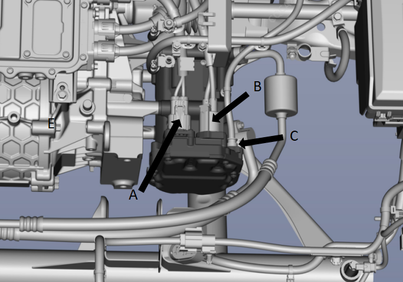
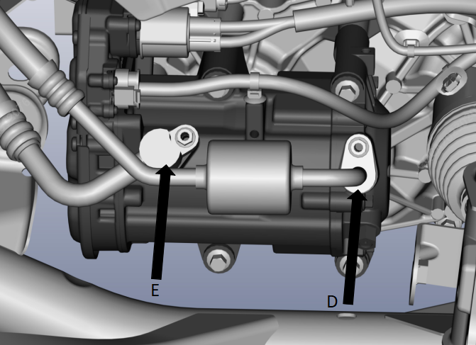
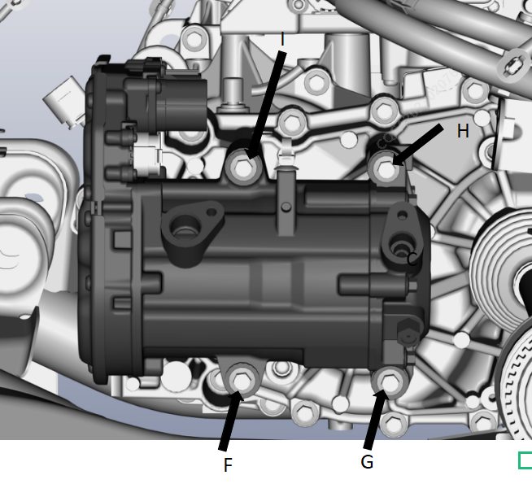
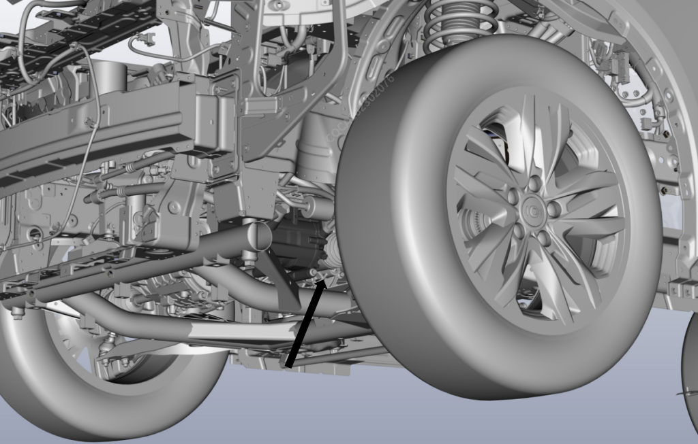

1.断开蓄电池负极线束接头。
2.断开压缩机线束接头A、B、C。

3.回收制冷剂，参见： 回收与加注空调制冷剂 。
拆卸压缩机低压管连接螺栓D、高压管连接螺栓E。
扭矩：10 ±1N.m

拆卸压缩机固定螺栓F、G、H，F。
扭矩：25 ±2N.m

从车辆轮胎处底部取出压缩机

安装顺序与拆卸顺序相反。
全新空调压缩机内已存有标准容量压缩机润滑油。
空调压缩机本身含有润滑油。若空调系统没有制冷剂泄漏，只是更换新的压缩机，按以下步骤进行操作：
排空已拆下的压缩机润滑油，测量排出的油量。
安装新的压缩机前，必须排出部分润滑油，新压缩机排出油量为已拆下的压缩机油量与190ml 的差值。
安装完成后，对空调系统抽真空，加注制冷剂。
参见： 回收与加注空调制冷剂 。
空调制冷剂加注完后，应按下列方式操作启动空调压缩机：
打开空调开关，设置空调温度为低温模式。
开启空调制冷模式，使空调压缩机在怠速状态下运行至少5 分钟。
安装完成后，对空调系统抽真空，加注制冷剂。